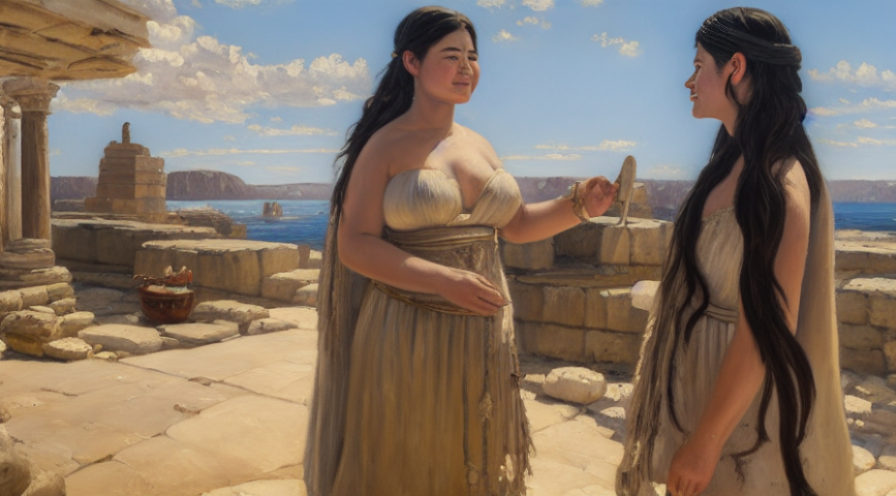
In the land of ancient Egypt, there lived a young girl named Cheryl, who lived a simple life with her parents and siblings.
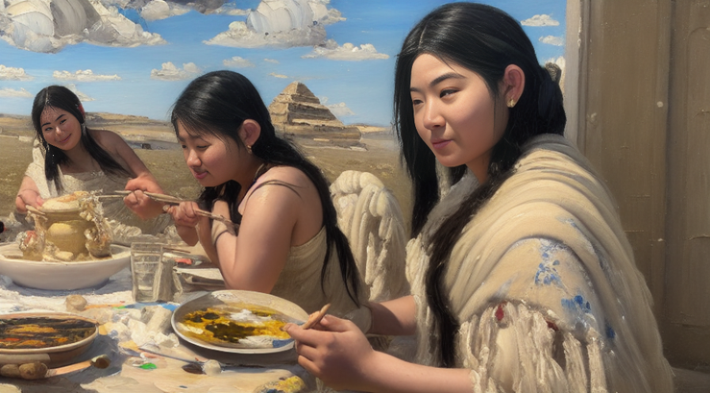
Her father was a farmer, and her mother was a weaver. They were a happy family, and their lives were filled with joy and love.
One day, while Cheryl was out collecting water from the nearby river, she heard screams coming from her village.
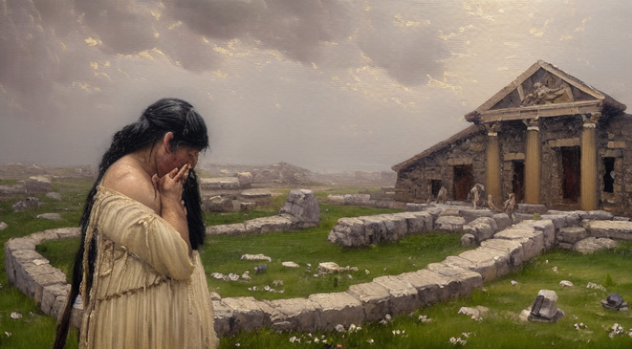
She ran back to her home to find a gruesome scene.
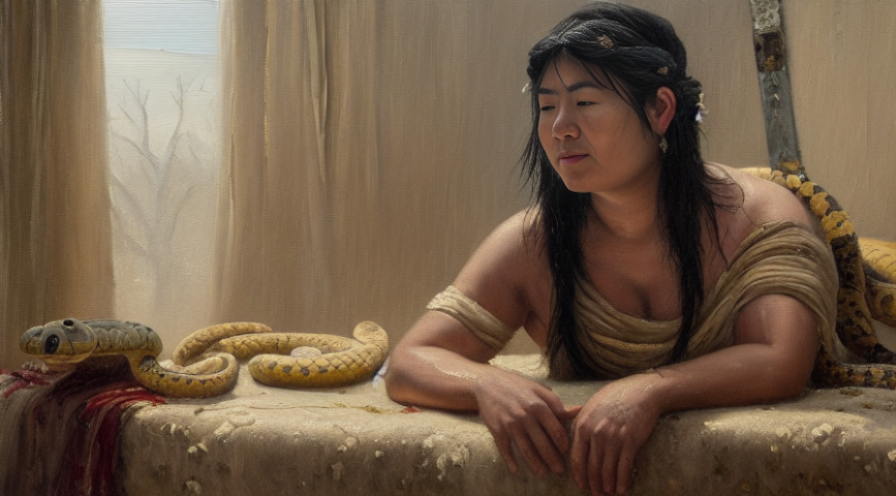
Her family lay dead on the ground, and a giant snake slithered out of their house. Cheryl knew that the snake was responsible for their deaths.
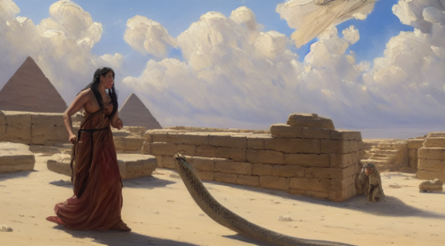
Filled with anger and grief, Cheryl picked up a spear and chased after the snake. She followed it deep into the desert, determined to avenge her family. She walked for days, fueled by her desire for revenge.
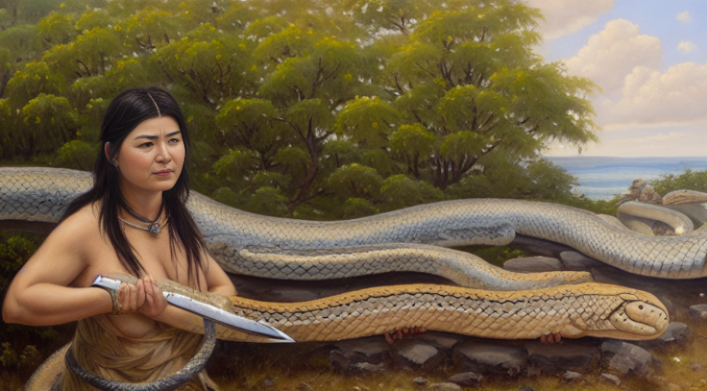
Finally, she found the snake resting under a tree. Cheryl approached it, her spear held tightly in her hands. The snake hissed, coiling itself up and baring its fangs.
Without hesitation, Cheryl charged forward, plunging her spear into the snake's body. The snake writhed and twisted, but Cheryl held on tight. She fought with all her might, not giving up until the snake lay lifeless at her feet.
Cheryl stood there for a moment, breathing heavily, her hands still gripping the spear. She looked down at the snake, then up at the sky. She knew that her family was gone, but she had avenged them. She had killed the creature that had taken their lives.
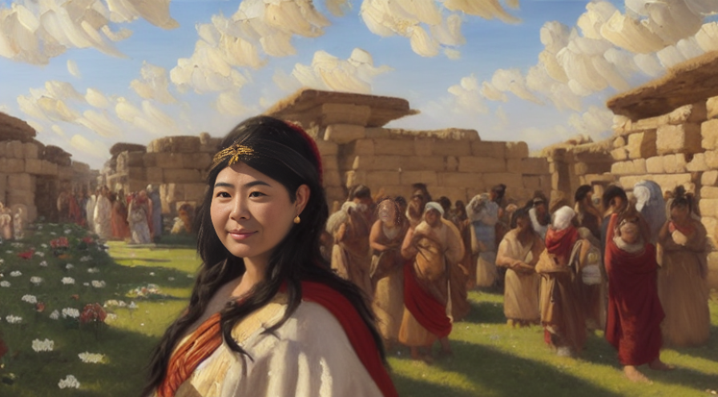
Cheryl returned to her village, where she was met with both admiration and fear. They called her the Snake Slayer, and her story became a legend that was told for generations. She had become a symbol of strength and bravery, a hero to all those who faced hardship and tragedy.
As for Cheryl, she lived the rest of her life knowing that she had done what she had to do. She had avenged her family, and nothing could take that away from her.

After Cheryl avenged her family's death, she yearned for more than just the life she had known. One day, she heard of a legendary warrior named Timothy. She became intrigued by the stories of his courage and strength and longed to meet him.
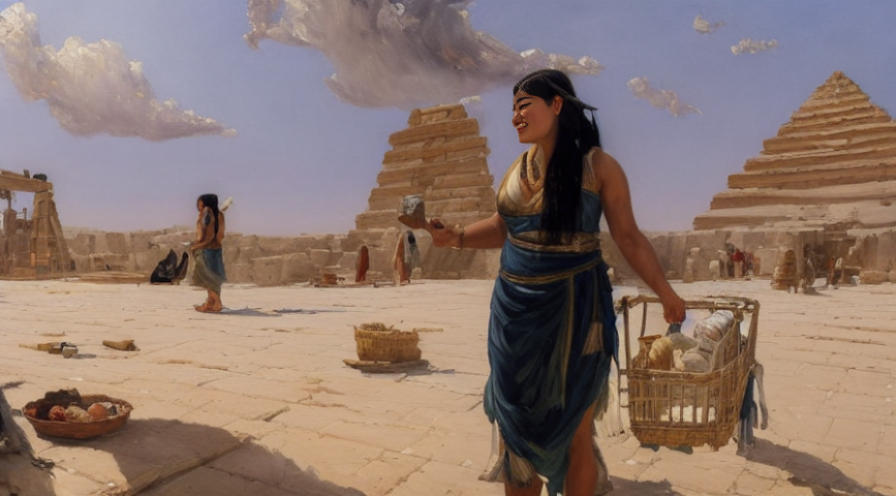
Determined to find Timothy, Cheryl set out on a journey. It was a perilous journey, but she was determined to meet the man who had captured her imagination.
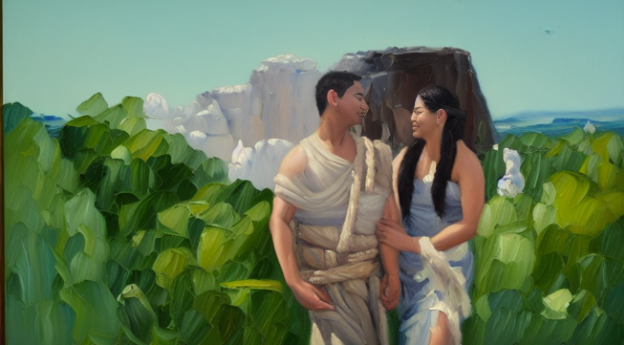
Finally, after weeks of travel, Cheryl arrived at Timothy's village. When they met, they both knew that there was an instant connection. They hugged each other tightly, and Cheryl knew that this was the man she had been searching for.
As they talked, Cheryl realized that Timothy was everything she had hoped for and more. He was not only strong and brave, but he was also kind and gentle. They spent hours talking, and before they knew it, the day had turned to night.
Cheryl and Timothy continued to see each other, and their feelings for each other grew stronger with each passing day. They fought side by side in battles and protected their village together. They became inseparable, and Cheryl knew that she had found her soulmate in Timothy.
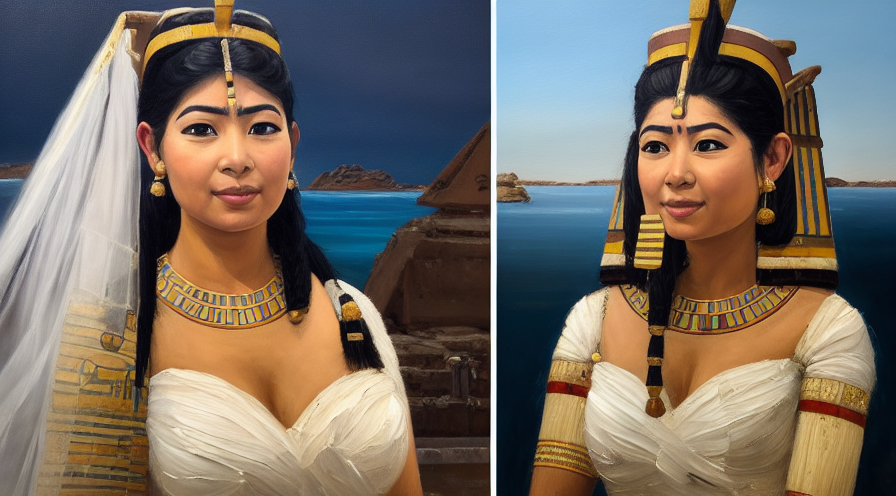
Eventually, Timothy proposed to Cheryl, and she eagerly accepted. They were married in a grand ceremony, surrounded by their friends and family.
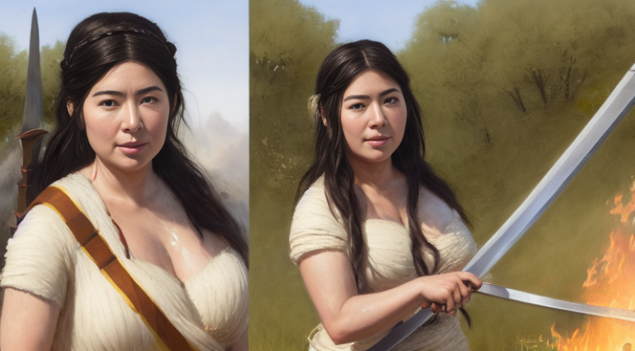